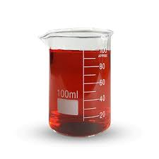
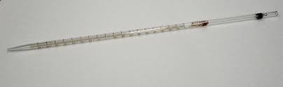
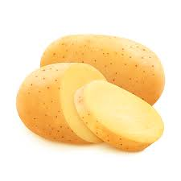

Na primeira experiência, utilizamos dois béqueres. Em um deles, colocamos 50 ml de água e uma pastilha de anti-ácido, e criaram-se bolhinhas em volta da pastilha. No outro béquer, colocamos uma pastilha triturada, que dissolveu mais rápido.
Na segunda experiência, usamos dois béqueres novamente. Em um, usamos água quente e colocamos uma pastilha, que diluiu mais rápido. No outro béquer, usamos água gelada e uma pastilha, que demorou mais para diluir.
Nessa experiência, utilizamos batata, água oxigenada e uma placa de vidro. Colocamos a batata crua em cima da placa de vidro, adicionamos água oxigenada na batata e esperamos por alguma reação. Depois de alguns minutos, apareceram bolhas na batata.
